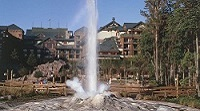

Soda Spring

Weather Summary
Currently:
Temperature: °F
Wind Chill: °F
Humidity: %
Wind Speed: mph
5 Days Forcast
| Tuesday | Wednesday | Thursday | Friday | Saturday |
|---|---|---|---|---|
 °F °F |
°F |
 °F °F |
 °F °F |
°F |
Soda Spring
Located along a shortcut on the Oregon-California Trail off of the main route to Fort Hall, Idaho is Soda Springs. These natural bubbling pools of carbonated water, caused by ancient volcanic activity, were first called “Beer Springs”. Visited by local Indians, fur traders, and trappers prior to the days of the Oregon Trail emigrations, the springs were rightfully considered to be one of the marvels of the overland trails.
February 29: Geyser Song Day
May 1-6: Days of May Celebration
October 15-16: Octoberfest